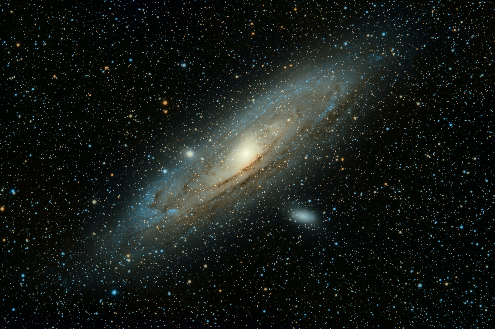

Exploring the Vast Frontiers: A Journey Through the Wonders of Space
Introduction:
Space, the final frontier, has always fascinated humanity with its limitless expanse and countless mysteries waiting to be unraveled. From breathtaking celestial bodies to mind-boggling cosmic phenomena, our understanding of the universe continues to evolve as we push the boundaries of exploration. In this blog post, we embark on an extraordinary journey through three captivating sections that showcase the wonders of space and our endeavors to comprehend its enigmas.
Splendors of Our Solar System

System , our celestial neighborhood, is a captivating ensemble of planets, moons, asteroids, and comets. In this section, we delve into the beauty and uniqueness of each celestial body, highlighting their intriguing features and scientific significance. From the colossal gas giant Jupiter with its mesmerizing storms, to the icy marvels of Saturn's rings, and the rugged terrain of Mars, we encounter a diverse array of worlds that spark our imagination. We also explore the remarkable discoveries made by space probes like Voyager and Cassini, which have unveiled the secrets hidden within these celestial spheres.
Unveiling the Mysteries of Deep Space

Beyond our Solar System lies a vast expanse of interstellar space, filled with countless galaxies, nebulas, and black holes. In this section, we delve into the mysteries of deepspace and the incredible tools and technologies that have allowed us to explore it. We discuss the awe-inspiring Hubble Space Telescope, which has captured stunning images of distant galaxies, revealing their mesmerizing colors and shapes. We also explore the mind-bending concept of black holes, their formation, and the groundbreaking observations made by projects like the Event Horizon Telescope. Furthermore, we touch upon the search for extraterrestrial life and the exploration of exoplanets, fueling our curiosity about the possibility of life beyond Earth.
Future Frontiers of Space Exploration

insatiable curiosity and quest for knowledge continue to push the boundaries of space exploration. In this section, we examine the exciting prospects and future frontiers of our cosmic endeavors. We discuss the ambitions ofspace agencies and private companies to return to the Moon and establish a sustainable lunar presence. We explore the groundbreaking plans for crewed missions to Mars, and the challenges that must be overcome to make interplanetary travel a reality. Furthermore, we delve into the concept of space tourism and the potential for commercial space travel to become accessible to a broader audience.
we conclude our cosmic journey, it becomes evident that space holds an allure and fascination that captivates our hearts and minds. The wonders of our Solar System, the mysteries of deep space, and the future frontiers of space exploration remind us of the boundless potential that lies beyond our home planet. By continuously expanding our understanding of the cosmos, we not only deepen our appreciation for the intricate wonders of the universe but also forge a path towards a future where humanity's destiny intertwines with the great expanse of space
P.O box 21 jump street